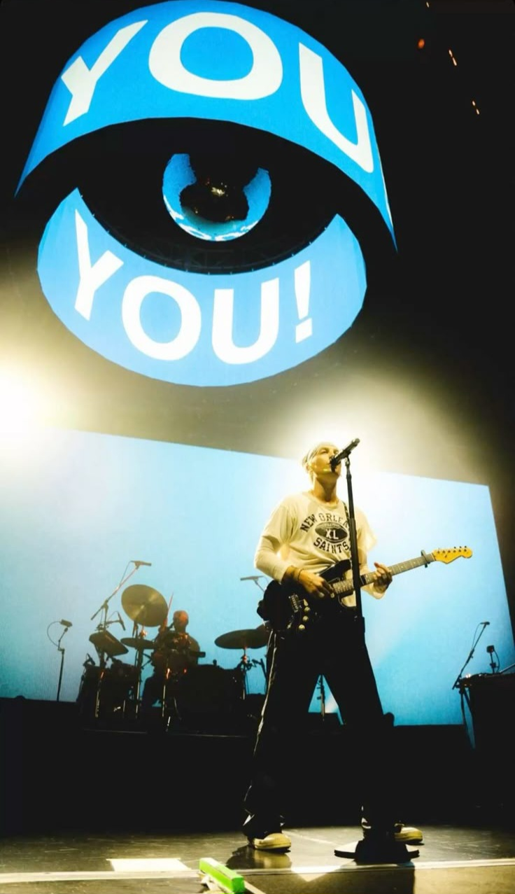
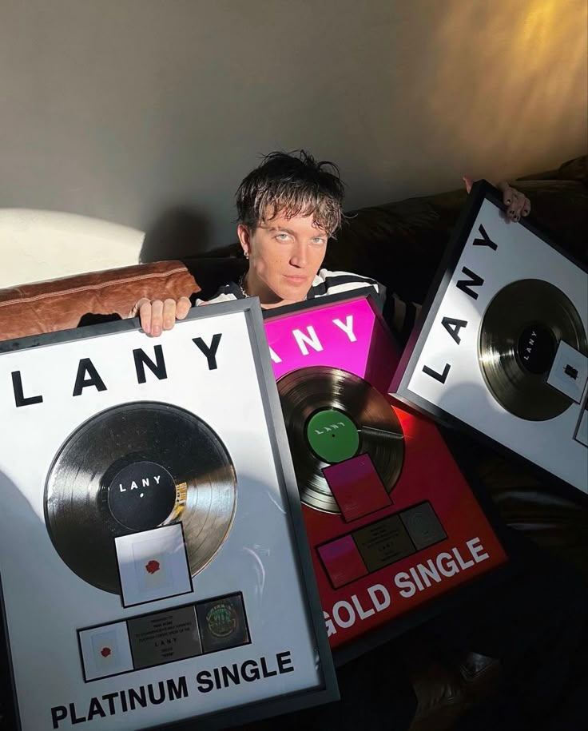
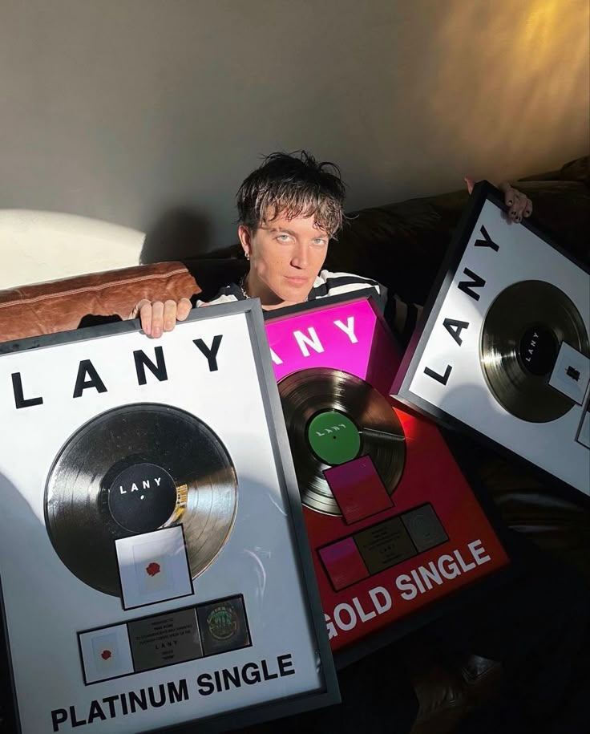
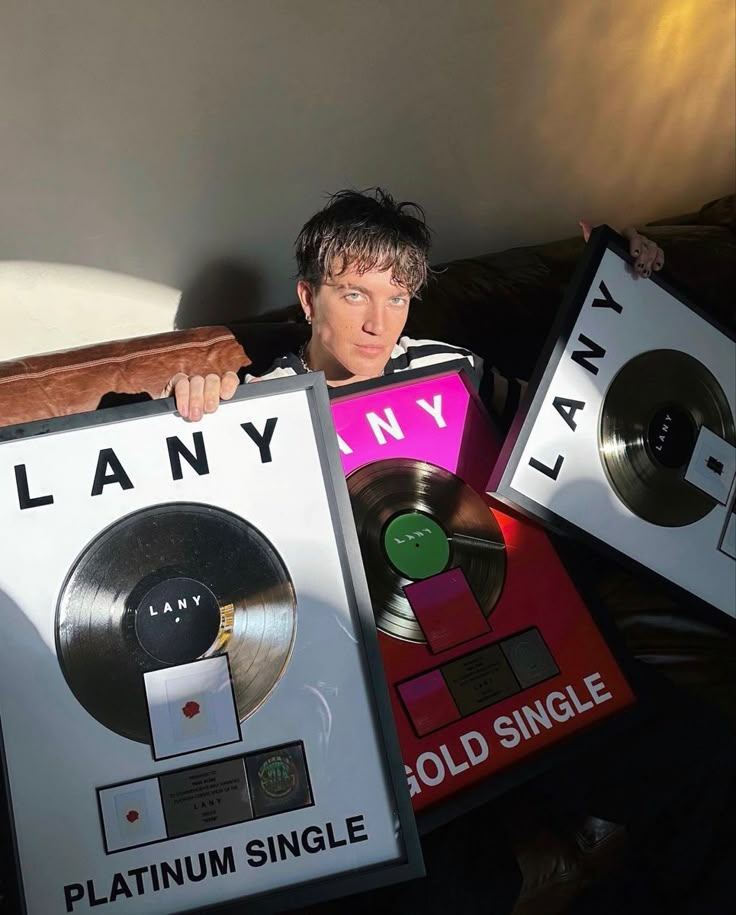
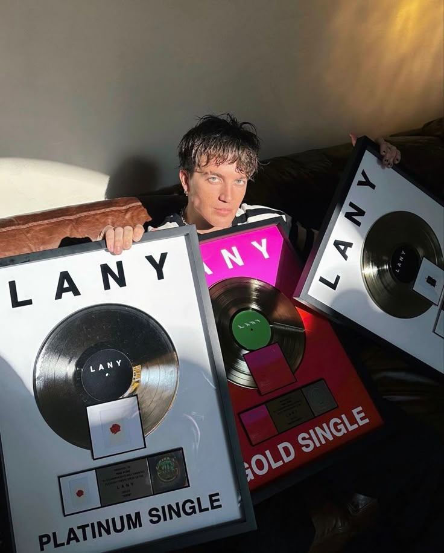

Galeri

 


Band pop alternatif dengan nuansa dreamy, emosional, dan estetik
Klik tombol play untuk memutar lagu LANY 🎧
LANY adalah band pop alternatif asal Los Angeles, Amerika Serikat, yang dibentuk pada tahun 2014. Nama LANY merupakan singkatan dari Los Angeles New York, dua kota besar yang memiliki karakter dan gaya hidup berbeda. Nama tersebut dipilih untuk merepresentasikan identitas musik mereka yang modern, emosional, dan dekat dengan kehidupan urban.
Musik LANY dikenal dengan nuansa dreamy pop, synth-pop, dan pop alternatif yang lembut. Lagu-lagu mereka sering menghadirkan melodi tenang dengan penggunaan synthesizer yang dominan, menciptakan suasana melankolis namun nyaman didengar. Ciri khas ini membuat LANY mudah dikenali dan memiliki gaya yang konsisten.
Tema lagu LANY banyak mengangkat tentang cinta, patah hati, kesepian, hubungan jarak jauh, serta proses memahami diri sendiri. Liriknya disampaikan dengan bahasa sederhana namun penuh makna, sehingga pendengarnya dapat merasa terhubung secara emosional dengan lagu-lagu mereka. Musik LANY sering dijadikan teman saat suasana galau, santai, maupun refleksi diri.
LANY beranggotakan tiga orang, yaitu Paul Jason Klein sebagai vokalis utama, Jake Goss sebagai drummer, dan Les Priest sebagai pemain keyboard serta gitar. Paul Klein berperan besar dalam penulisan lagu-lagu LANY dan banyak menuangkan pengalaman pribadinya ke dalam karya mereka. Hal ini membuat lagu-lagu LANY terasa jujur, personal, dan menyentuh perasaan.
Popularitas LANY mulai meningkat setelah merilis lagu ILYSB, yang menjadi viral dan banyak didengarkan di berbagai platform musik digital. Kesuksesan tersebut membuka jalan bagi LANY untuk merilis album demi album yang mendapat respon positif dari pendengar di seluruh dunia, seperti Malibu Nights dan Mama’s Boy.
Selain musiknya, LANY juga dikenal dengan konsep visual yang estetik, sering menggunakan warna biru sebagai identitas visual mereka. Kombinasi antara musik yang emosional dan visual yang konsisten membuat LANY memiliki ciri khas yang kuat di industri musik internasional. Hingga saat ini, LANY memiliki jutaan pendengar dan penggemar setia dari berbagai negara.
Paul Jason Klein
Vokal utama
Jake Goss
Drum
Les Priest
Keyboard dan gitar

LANY merupakan band pop alternatif yang memiliki ciri khas musik lembut, emosional, dan penuh makna. Lagu-lagu LANY mampu menyampaikan perasaan pendengarnya melalui lirik sederhana dan melodi yang menenangkan.
Dengan adanya website ini, diharapkan pembaca dapat lebih mengenal band LANY serta memahami bagaimana sebuah website statis sederhana dapat dibuat menggunakan HTML dan CSS.